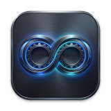
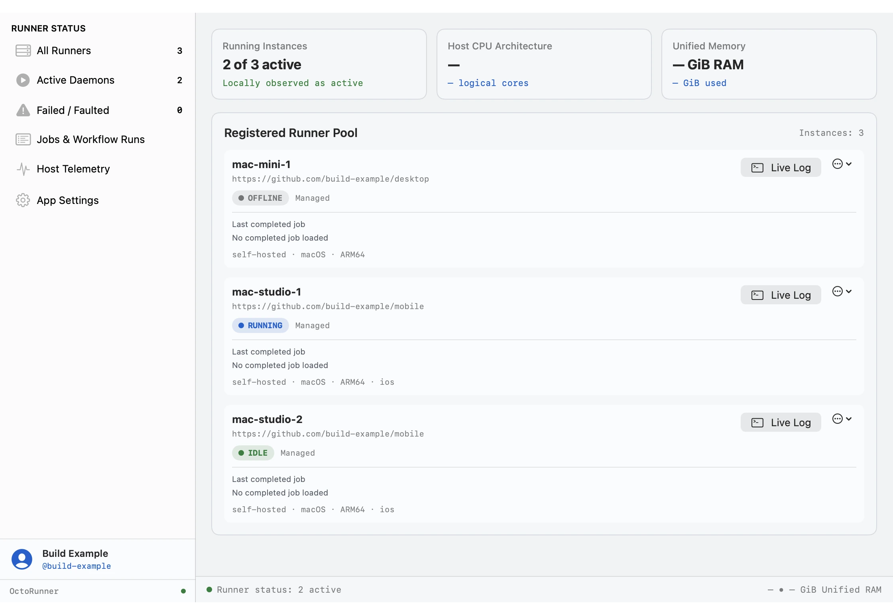
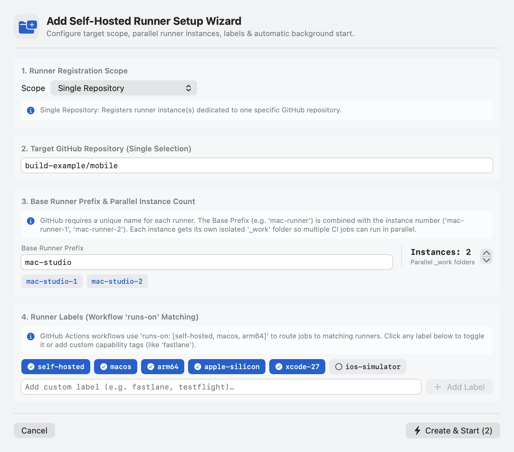
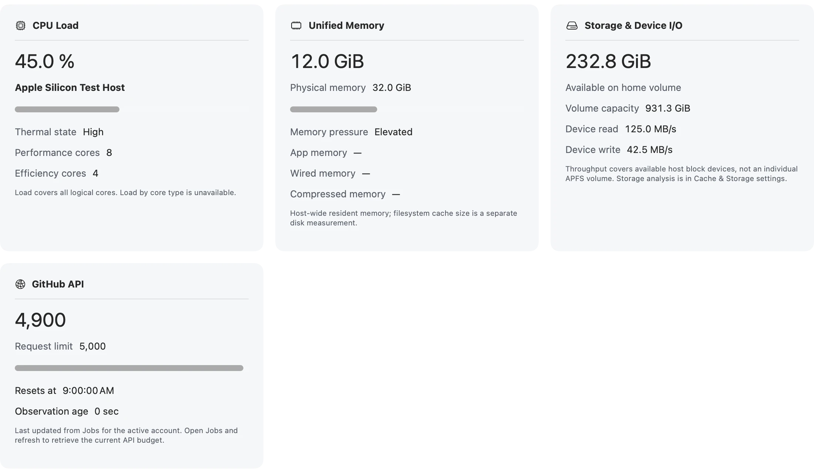

Manage runners
Set up a fresh runner or import an existing one. See whether each runner is idle, running, or offline at a glance.

OctoRunnerSet up and monitor self-hosted GitHub Actions runners on your Mac. See what’s running and open the logs for failed jobs.
brew install --cask loesch-digital/tap/octorunner

Set up a fresh runner or import an existing one. See whether each runner is idle, running, or offline at a glance.
Find the pull request for a run, drill into jobs and steps, and open available GitHub Actions logs.
Check CPU, memory, disk activity, and GitHub API usage from the Host Telemetry view.

